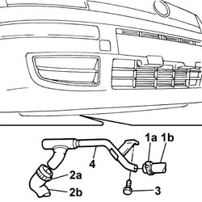

1088D24 rigid pipe for coolant inlet to water pump - r + r
- Path
- Procedures > 10 ENGINE UNIT > 1088 ENGINE COOLING > 1088D coolant hoses and sleeves > 1088D24 rigid pipe for coolant inlet to water pump - r + r
- Kind
- repair procedure (removal / refitting; the operation number is the code)
- Applies to
- engines: 1.1, 1.2 8v; all production periods
- Interactive page
- https://sloeber94.github.io/elrnDB-fPnd/en/#/2752547
Applies to: engines: 1.1; all production periods
 Removing
Removing
 Refitting
RefittingPlace the car on a lift.
1072C44 exhaust manifold heat shield on bulkhead - r+r
Position a suitable container for recovering the coolant.
1. Remove band (1a) and disconnect heater coolant inlet pipe (1b)
2. Remove band (2a) and disconnect radiator coolant inlet pipe (2b)
Raise the car.
3. Undo the engine bracket rigid pipe retaining bolts
4. Detach the water pump rigid coolant inlet pipe.
Remove the gasket.

Applies to: engines: 1.2 8v; all production periods
Removing
RefittingPlace the car on a lift.
1072C44 exhaust manifold heat shield on bulkhead - r+r
Position a suitable container for recovering the coolant.
1. Remove band (1a) and disconnect heater coolant inlet pipe (1b)
2. Remove band (2a) and disconnect radiator coolant inlet pipe (2b)
Raise the car.
3. Undo the engine bracket rigid pipe retaining bolts
4. Detach the water pump rigid coolant inlet pipe.
Remove the gasket.
Applies to: engines: 1.1; all production periods
Refitting
RemovingReplace the water pump O-Ring.
Fit the water pump rigid coolant inlet pipe.
Tighten the bolts fixing the rigid pipe to the crankcase to torque.
 | Fastening | Component | Ø | Value (daNm) |
|---|---|---|---|---|
- | Bolt | COOLANT PUMP RIGID INLET PIPE | M6 x 1 | 1 |
Connect radiator coolant inlet pipe and secure it using retaining bands
Connect heater coolant inlet pipe and secure it using retaining bands
Applies to: engines: 1.2 8v; all production periods
Refitting
RemovingReplace the water pump O-Ring.
Fit the water pump rigid coolant inlet pipe.
Tighten the bolt fixing the rigid pipe to the crankcase to torque.
| Fastening | Component | Ø | Value (daNm) |
|---|---|---|---|---|
- | Bolt | COOLANT PUMP RIGID INLET PIPE | M6 x 1 | 1 |
Connect radiator coolant inlet pipe and secure it using retaining bands
Connect heater coolant inlet pipe and secure it using retaining bands